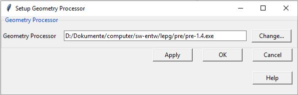

Setup Geometrie Prozessor Fenster
Detaillierte Erklärungen zum Setup Geometrie Prozessor Fenster.
Der Geometrie Prozessor ist ein externes Programm welches via lepg gestartet werden kann. Da der Speicherort oder die Version ändern kann muss initial konfiguriert werden welcher Prozessor verwendet werden soll.
Innerhalb des lepg Installationsverzeichnisses ist ein Unterverzeichnis mit dem Namen "pre". In diesem Unterverzeichnis wird eine kompatible Version des Geometrie Prozessors mitgeliefert. Der Name des Geometrie Prozessors müsste gleich oder ahnlich wie "pre-1.4.exe" sein.